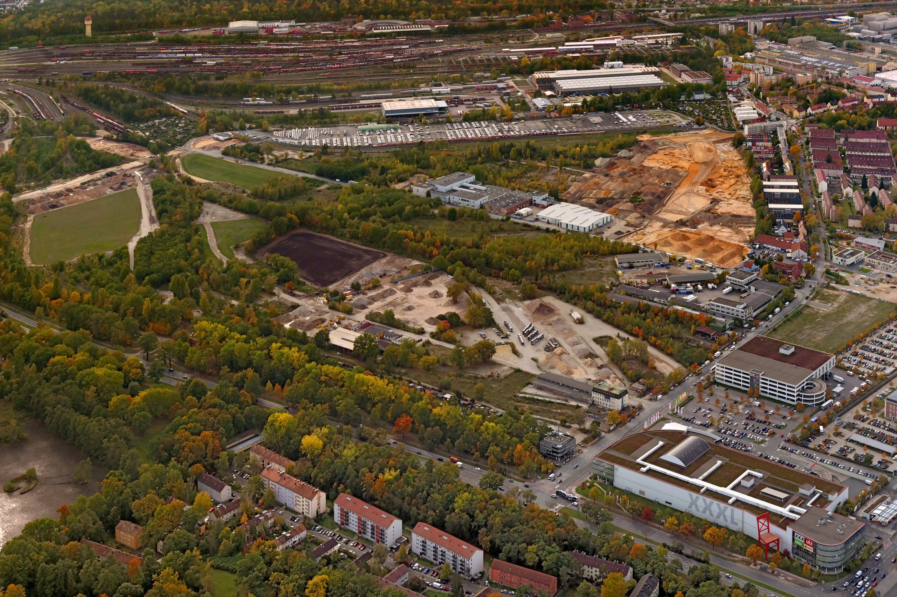
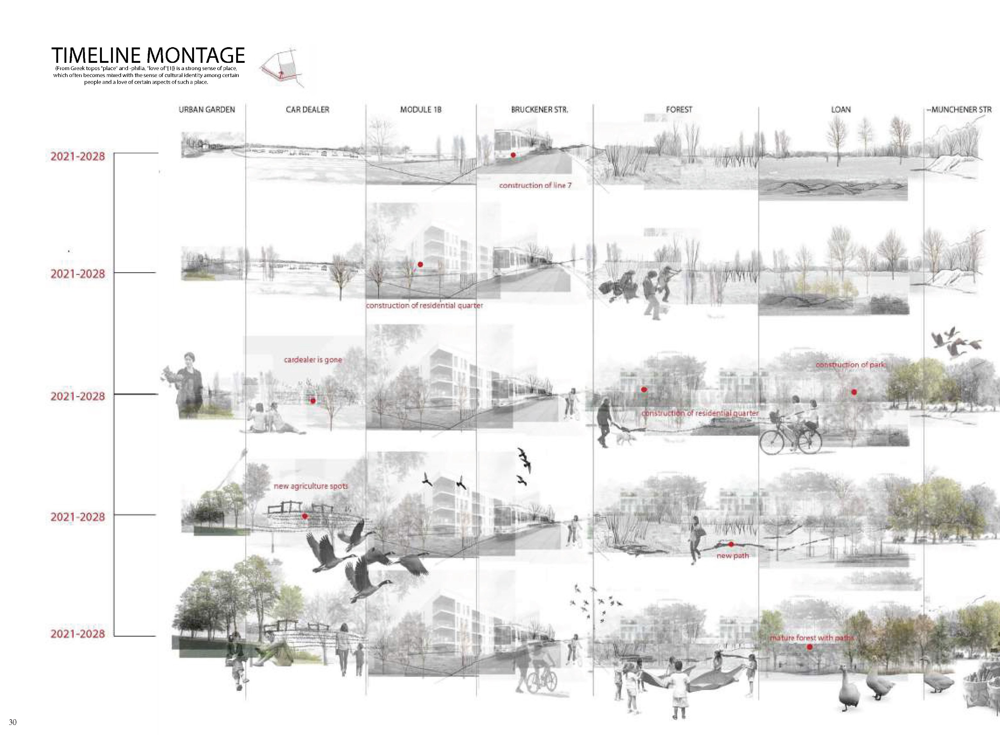
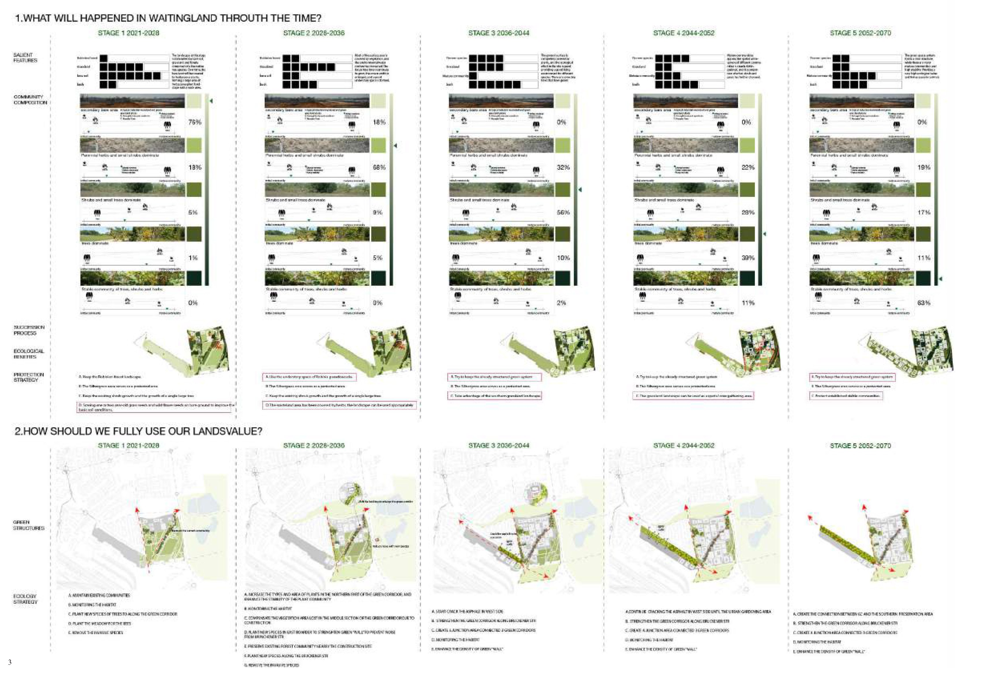
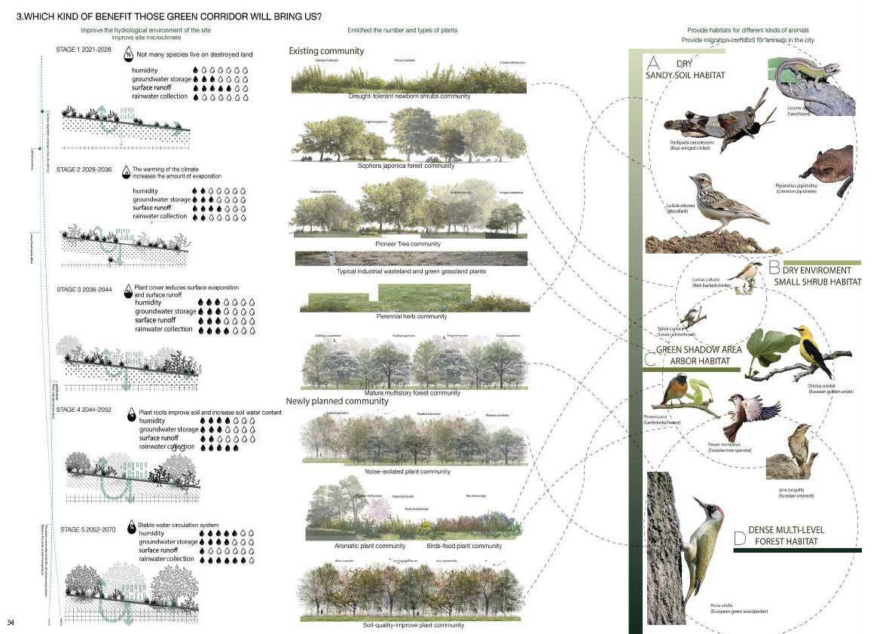
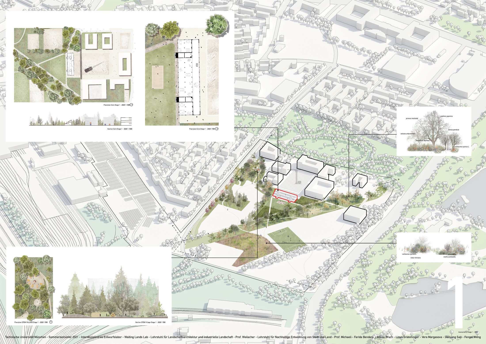
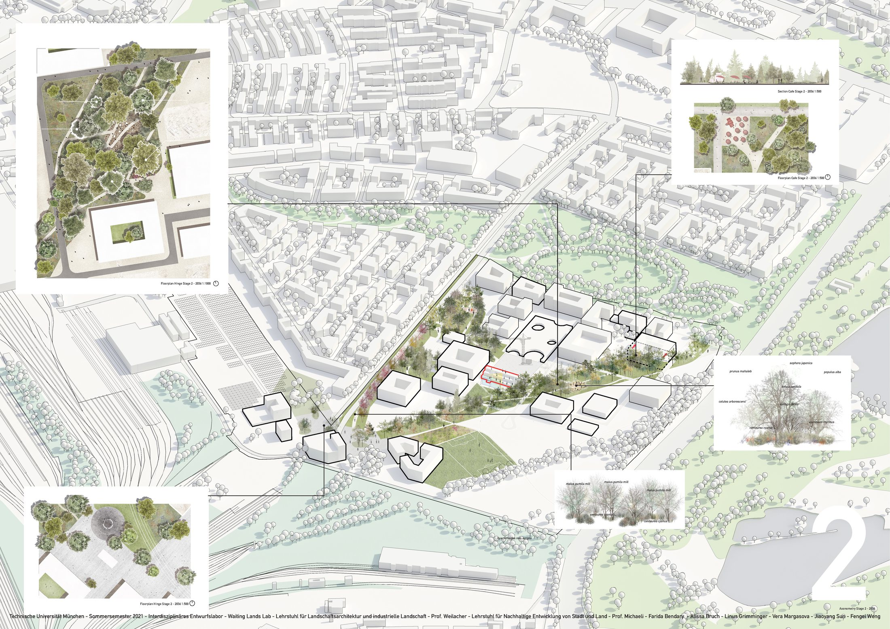
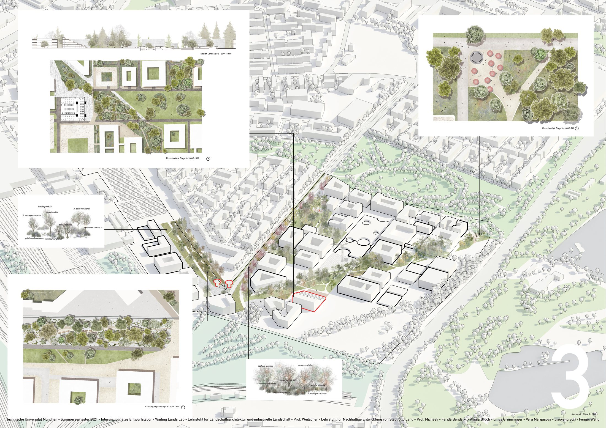
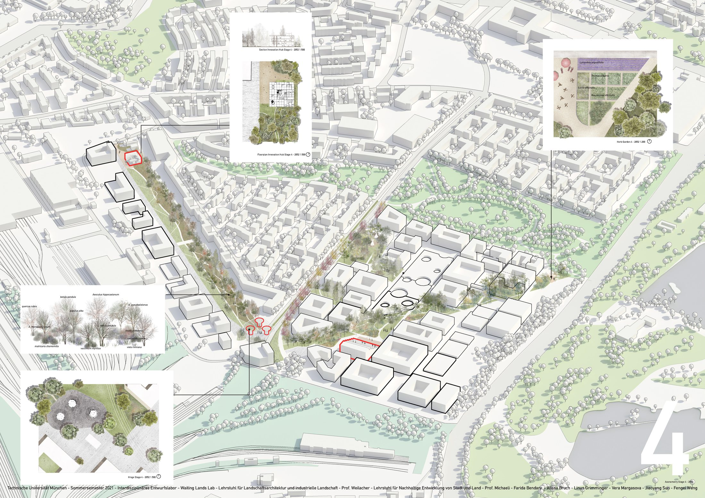
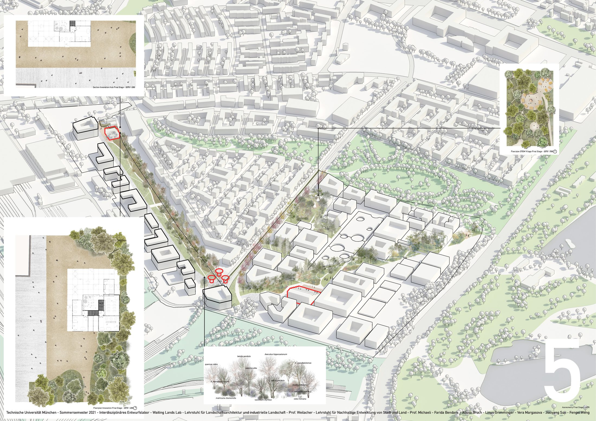

Phased Campus Growth
Mapping construction stages and identifying temporary open grounds between development phases.
Waiting lands lab

A campus-scale research and landscape strategy for waiting lands in Nuremberg, developed around the question of what temporary open ground can become before, during, and after long-term construction.
The project treats vacant urban land as an active ecological process rather than an empty reserve. Through time-based scenarios, succession studies, and low-intervention landscape proposals, it explores how meanwhile landscapes can support daily use, climate adaptation, habitat formation, and a slower relationship between people and nature.
Mapping construction stages and identifying temporary open grounds between development phases.
Transforming idle land into informal gardens, paths, gathering spaces, and low-cost public landscapes.
Reading spontaneous vegetation as a design resource for shade, soil improvement, and microclimate regulation.
Linking human use with habitats for insects, birds, small animals, and plant communities.







